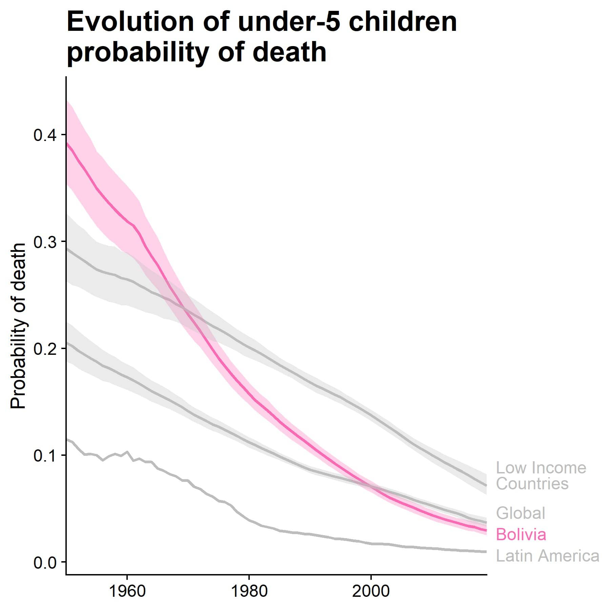
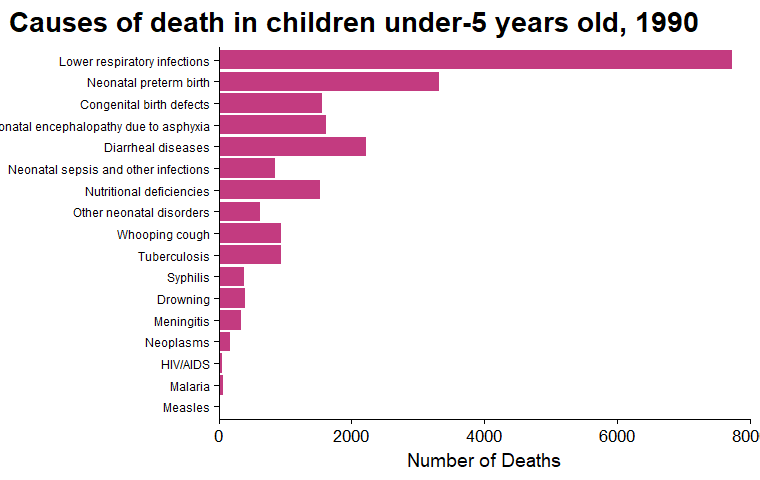
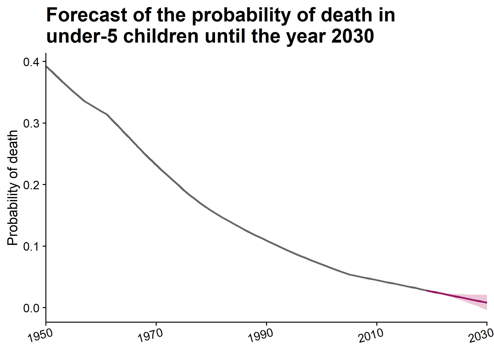

Trends in child mortality
Introduction
Mortality among children under the age of five is a serious public health problem, especially in low-income nations. According to the World Health Organization (WHO), an estimated 5,4 million children under the age of five died in 2019, with the overwhelming of these fatalities happening in low-income nations. Many of these fatalities are preventable with access to basic healthcare and nutrition, making this a devastating and unacceptable reality.
Malnutrition is one of the leading causes of infant mortality in low-income nations. WHO estimates that malnutrition causes to around 45 percent of mortality among children under the age of five. This is often the consequence of poverty, lack of access to nourishing food, and inadequate sanitation and hygiene standards. In addition, many children in low-income countries lack access to basic healthcare, such as immunizations and treatment for common childhood diseases like pneumonia and diarrhea.
Lack of access to maternal healthcare is a key factor to child mortality in low-income nations, particularly among children under the age of five. Numerous women in these nations lack access to prenatal care, and many give birth at home without the support of skilled medical personnel. This may result in difficulties during delivery that are deadly for both mother and child.
In addition to malnutrition and lack of access to maternal healthcare, infectious illnesses such as malaria, measles, and HIV/AIDS are also primary causes of death among children under the age of 5. Because these reasons are often intertwined and may intensify one another, it is essential that attempts to address them be coordinated and holistic.
The Global Burden of Disease (GBD) database, which is managed by the Institute of Health Metrics and Evaluation (IHME) at the University of Washington, is a significant resource for comprehending the effect of mortality among children under the age of five in low-income nations. The GBD database contains information on the causes of death in various nations, as well as the risk factors and treatments linked with these fatalities. This information may be used to guide the formulation of policies and programs, as well as to track progress over time.
The aim of this research is to track global trends in infant and child mortality, with a focus on Bolivia. Furthermore, we look for correlations between child mortality, income level, and the accessibility of high-quality medical care. Our presentation will conclude with an outline of the leading causes of infant mortality and forecasts for this metric.
Methods
Database
Because it gathers so much data from so many nations over such a long time span, the GBD database is one of our primary resources.
Studied variables
In order to meet our objectives, the following variables were compiled:
- Under-5 mortality, as expressed by probability of death
- Location, 204 countries and territories and selected subnational locations
- Year, time period of estimate.
- Cause of death, disease responsible for death.
- Socio-Demographic Index (SDI), is a comprehensive index of developmental status that has a robust relationship to health outcomes. It is calculated as the geometric mean of the indices from zero to one for the total fertility rate among those under the age of twenty-five, the average level of education among those aged fifteen and above, and the lag distributed income per capita. A composite SDI of 0 would indicate the least developed area in terms of health, while an SDI of 1 would indicate the most developed area.
- Healthcare Access and Quality (HAQ) Index, Using the arithmetic mean of scaled mortality-to-incidence ratios and risk-standardized death rates for 32 causes of death that should not occur in the context of timely and good health care
- World Bank country classifications by income level 2019
Data analysis
The data were examined for normality using the Shapiro-Wilk test; since they did not present a normal distribution, a non-parametric approach was chosen.
For descriptive statistics, the median and interquartile range will be reported. Data were compared between more than two unpaired groups by performing the Kruskal-Wallis rank-sum test. The degree of linear relationship between two variables will be assessed by the Spearman rank correlation coefficient. The results were considered significant at p < 0.05. The machine-learning algorithm Prophet will be used to forecast the evolution of infant mortality in the future. Statistical analysis was performed using R software version 4.2.2 (R Development Core Team, 2022).
Results
Mortality in children under 5 years
Mortality in children under 5 years of age has decreased considerably in recent decades. However, in some parts of the world, this indicator remains unacceptably high, as shown in Figure 1 below.
Despite the challenges that still exist in addressing mortality in under-5 children, there have been some promising trends in recent years. One of these trends is the decrease in child mortality rates.
Child mortality in Bolivia was quite high in the past, but it has decreased significantly in recent years and is currently lower than the global rate but still above the regional average, as shown in Figure 2.

The influence of socioeconomic status and access to health care on child mortality
Child mortality is highly related to nation-level development (as assessed by SDI) and access to quality health care (as evaluated by HAQ). In Figure 3 and Figure 4 were we computed a Spearman’s correlation coefficient to assess the linear relationship between HAQ and SDI, and child mortality. There was a negative correlation between the two variables.


Bolivia is considered a lower middle-income country.The Kurskal-Wallis rank sum test revealed that there was a statistically significant difference in child mortality between all groups, as shown in Figure 5 and Table 1. Lower middle-income countries tend to have higher mortality than upper middle-income countries and high-income countries. We can also observe that the higher the country’s income, the lower the child mortality rate.

| High Income | Upper Middle Income | Lower Middle Income | |
|---|---|---|---|
| Upper Middle Income | <0.0001 | - | - |
| Lower Middle Income | <0.0001 | <0.0001 | - |
| Lower Income | <0.0001 | <0.0001 | <0.0001 |
Causes of death
Currently, the majority of deaths in children under 5 years of age are due to congenital anomalies, as shown in Figure 6. This was not always the case; as shown in Figure 7 and Figure 8, historically, the main cause was pneumonia and respiratory tract infections.


Figure 8 also shows an enthusiastic development: the decreasing incidence of pediatric pneumonia. In Bolivia, like in other low-income economies, pneumonia was a major cause of death of children under the age of five. However, the frequency of pediatric pneumonia has reduced in recent years owing to increasing availability to immunizations like the pneumococcal conjugate vaccine and better diagnosis and treatment.
Forecasting the Future of Child Mortality
Mortality is expected to continue to decline in the future as shown in the Figure 9 below.

Conclusion
In conclusion, infant mortality is a substantial public health problem, especially in low-income nations. The leading causes of these fatalities include malnutrition, lack of access to mother and child healthcare, neonatal causes, and infectious illnesses. The GBD database is a significant resource for understanding the effects of this problem and may be used to guide the creation of policies and programs. It is crucial that all countries collaborate to solve this problem, with a particular emphasis on providing access to basic healthcare, nutrition, and maternity care.